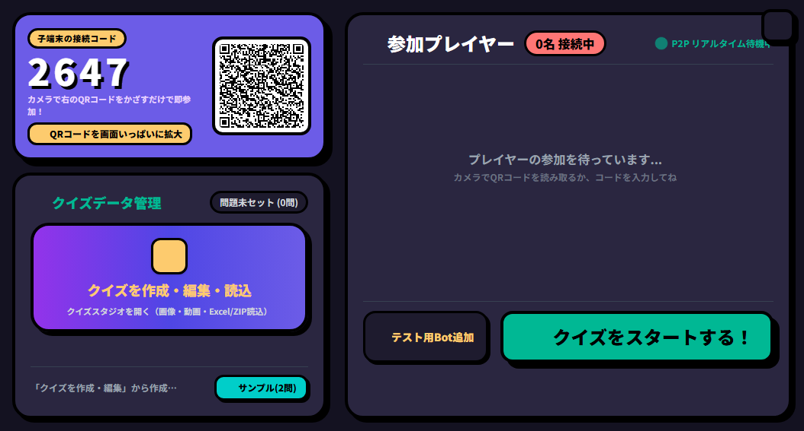
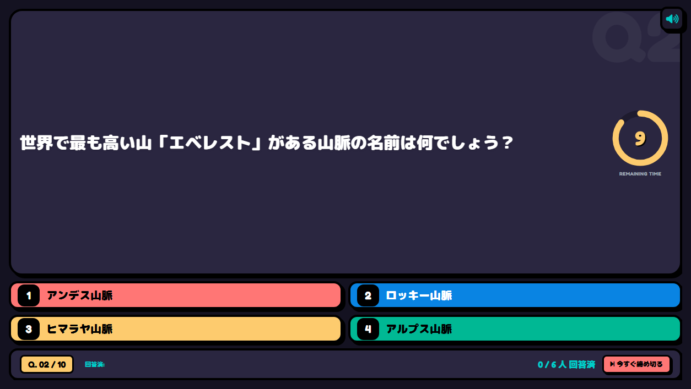
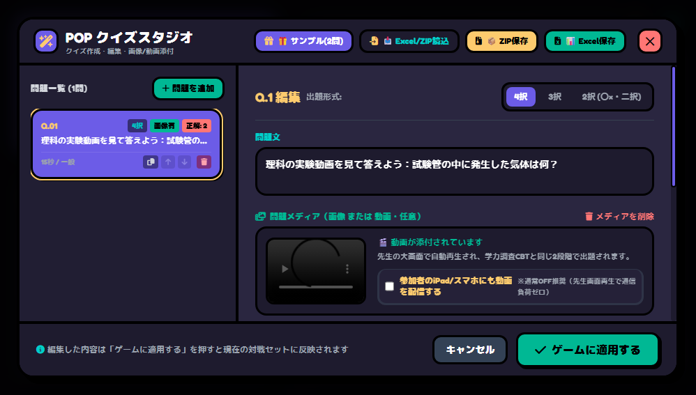
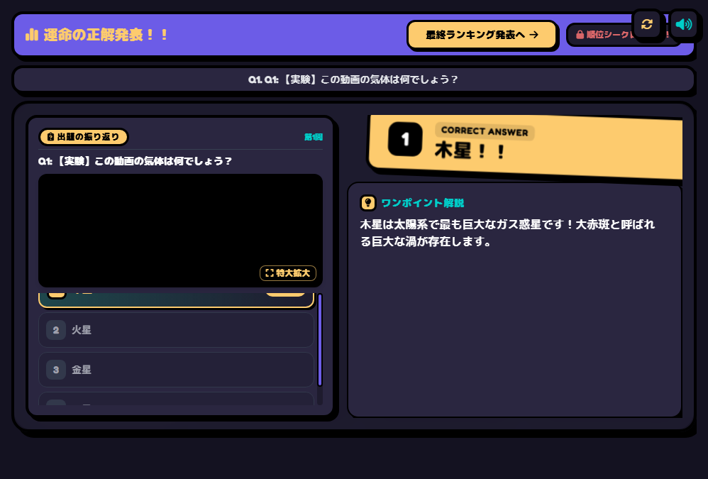
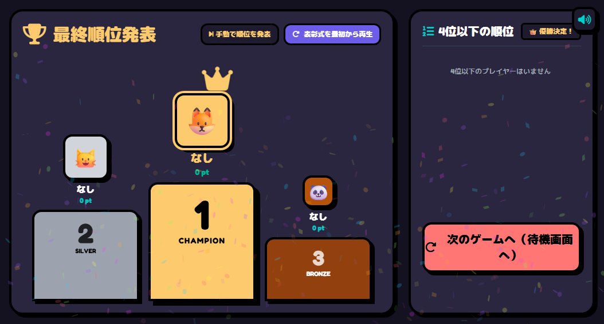

学校・研修・イベント用公式ガイド
Ver 3.7.0 最新版
★ サーバー・ログイン・専用アプリ 不要！
POP QUIZ SHOW 先生のための1枚かんたん使い方ガイド
iPadやPCのブラウザだけで即起動！大画面のQRコードを子どもたちがカメラで読み取るだけで、クラス全員と白熱のリアルタイム対戦クイズが楽しめます。
まずはここへアクセス！
先生のiPad / PCで開く
https://matsuoka-tsuyoshi-edu.github.io/webapp/quizweb/
※カメラでQRを読み取っても開けます
1
準備と参加（たった1分！）
生徒はQR即参加
- ① トップ画面から「ホスト画面（親機）」を開きます。
- ② テレビやプロジェクターに先生の画面を映し出します。
- ③ 子どもたちは手元のiPad/スマホのカメラで大画面のQRコードをスキャン！
- ④ 好きな動物アバターと名前を入力して参加完了！


QRコードを大きく見せたい時: コード横の「🔍 QR拡大」を押せば画面いっぱいに特大表示できます！
2
問題の用意（選べる3スタイル）
自由自在に作成
★ スタイルA: サンプルライブラリから選ぶ (新機能)
「サンプル問題」から中学校7教科70セットを選択！「＋たす」で複数セットの合体もOK！
★ スタイルB: アプリ内で直感作成（クイズスタジオ）
「✏️ クイズを作成・編集」から、4択・3択・2択（〇×）を簡単作成。画像や10秒以内の動画も添付可能！
★ スタイルC: Googleドライブ / Excel / ZIP読み込み
PCで作ったExcelやZIPをGoogleドライブに保存し、iPadの「ファイル」アプリから選ぶだけで即読込！

保存もワンクリック: 作成したクイズは「ZIP保存」しておけば、次回以降いつでも読み込んで再利用できます。
3
スタート！白熱のクイズ進行
完全自動演出
- ① 出題 ＆ カウントダウン: 回答状況がリアルタイムにポップ表示！動画問題は先生画面で見てから早押し開始。
- ② 回答分布グラフ ➔ 運命の正解発表: ドラムロール後に大迫力の正解開示！左に問題・動画、右に正解＆解説が並びます。
- ③ 子ども手元で教育的振り返り: 自分の回答と正解がパッとわかり、学習効果が抜群です。
- ④ 感動の表彰式: 4位以下から順に発表し、1位はドラムロール＆手元で紙吹雪が炸裂！


終盤戦シークレット演出: ラスト2問は手元順位が「第 ❓ 位」になり、最後の表彰式まで大逆転のワクワク感が持続します！